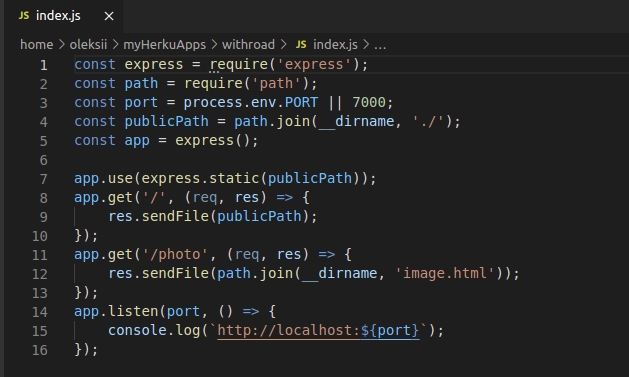

! Do everything like on image below:

The most important part is publicPath variable
and express.static method call
Into publicPath variable we say to browser where all files located.
And express.static
method helps browser use all files in current (project) folder
A little surprise
You can even do like on the image above, I mean that it's unnecessary to
pass file name like argument to get handler in the default page.
Cause browser listens that folder and always opens index.html
The Open Graph protocol